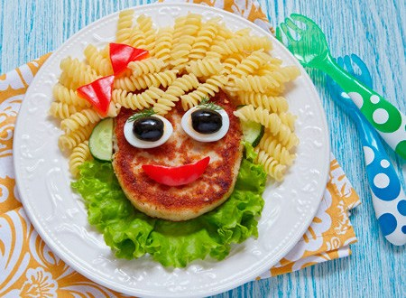

|  | O cardápio é elaborado semanalmente por nossa nutricionista Amélia Neves, e todos os alimentos são preparados diariamente em nossa cozinha. Buscamos inovar o menu, trazendo toda semana uma nova receita às sextas-feiras, sempre seguindo as normas de higiene de manipulação de alimentos. Clique aqui para acessar o cardápio da próxima semana. |
|---|
Campininos® Escola de Ensino Infantil e Fundamental 2021 - Todos os direitos reservados. By Yasmine Pallin.